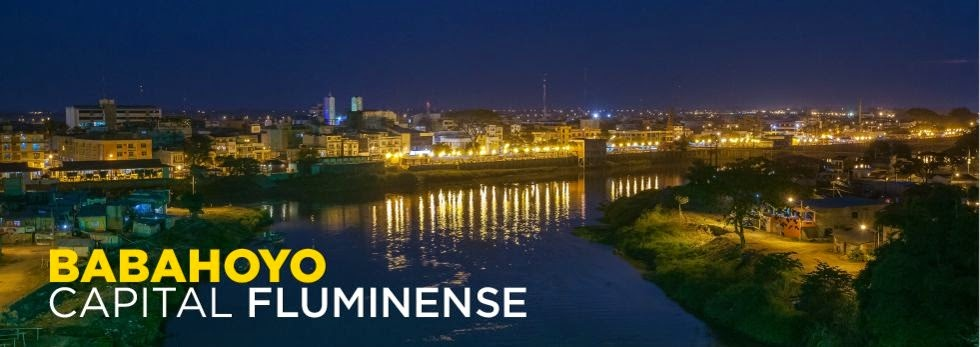

Babahoyo, la vibrante capital de la provincia de Los Ríos, se alza como una ciudad llena de vida, historia y tradición en el corazón de la región litoral del Ecuador. Conocida como la “Puerta de Oro” por su posición estratégica entre la Costa y la Sierra, esta ciudad ha sabido crecer al ritmo del progreso sin perder su esencia cálida y acogedora. Sus calles, bañadas por el vaivén de los ríos Babahoyo, San Pablo y Caracol, cuentan historias de comercio, cultura y lucha, mientras sus habitantes, orgullosos y trabajadores, reflejan el espíritu resiliente de su tierra. Babahoyo es más que un punto en el mapa: es un lugar donde lo moderno se encuentra con lo ancestral, donde la gastronomía, la naturaleza y las costumbres se entrelazan para ofrecer una experiencia auténticamente costeña. Es una ciudad que invita a descubrirla, a recorrer sus espacios, a saborear sus delicias y a sentir la calidez de su gente. Quien llega a Babahoyo no solo conoce una ciudad, sino que se conecta con el alma de todo un pueblo.
Babahoyo: Corazón de la Provincia de Los Ríos Babahoyo, capital de la provincia de Los Ríos,se destaca como una ciudad llena de historia, cultura y dinamismo. Fundada oficialmente el 27 de mayo de 1869, ha sido un punto estratégico en la región litoral del Ecuador debido a su ubicación geográfica, en la confluencia de los ríos Babahoyo, San Pablo y Caracol. Considerada la "Ciudad Puerta de Oro del Ecuador", Babahoyo combina lo urbano con lo rural, lo moderno con lo tradicional. Su gente cálida y trabajadora, sus fértiles tierras y su creciente desarrollo comercial la han convertido en un lugar clave para el intercambio agrícola y económico de la región. Es una ciudad que guarda la esencia de la costa ecuatoriana, con una mezcla de tranquilidad pueblerina y avances urbanos. Babahoyo ha sido testigo de importantes momentos históricos y sigue siendo un punto de referencia por su hospitalidad, su comida típica, y sus paisajes naturales.
Babahoyo es una ciudad que respira identidad y tradición en cada rincón. Ubicada en el corazón de la provincia de Los Ríos, es reconocida por su papel fundamental en el desarrollo agrícola y comercial del país. Esta ciudad, rodeada de verdes paisajes y atravesada por majestuosos ríos, ha sabido forjar su camino como un centro urbano en constante crecimiento, sin dejar de lado la calidez y sencillez que caracteriza a su gente. Babahoyo no solo es una capital provincial, es un reflejo de la vida costeña, donde el ritmo tranquilo de sus días se mezcla con la energía del trabajo diario y la esperanza de un futuro prometedor. Su historia está marcada por el esfuerzo de generaciones que han aportado al desarrollo de la región, haciendo de esta ciudad un lugar digno de admiración y orgullo. Caminar por Babahoyo es sentir el calor humano, el sabor típico de su gastronomía y la riqueza cultural que se mantiene viva con el paso del tiempo. Sin duda, esta ciudad es el punto de partida perfecto para descubrir lo mejor de la costa ecuatoriana
